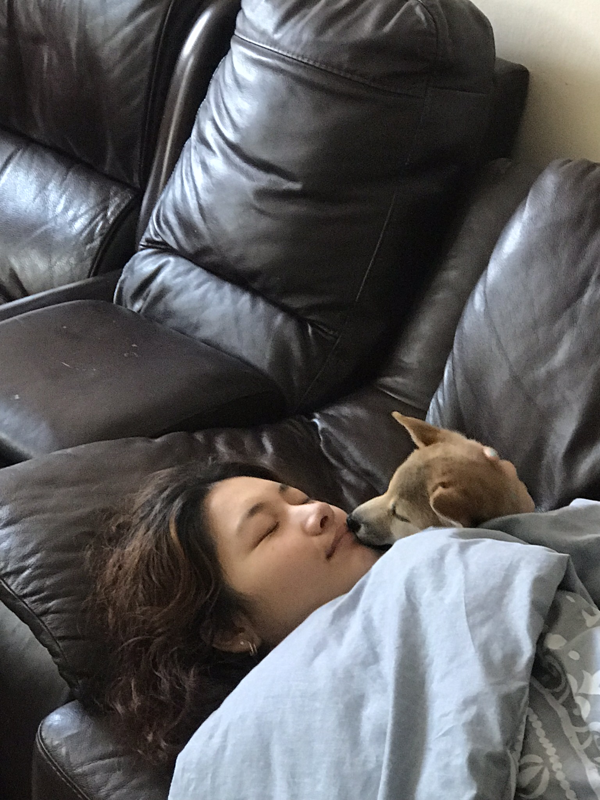
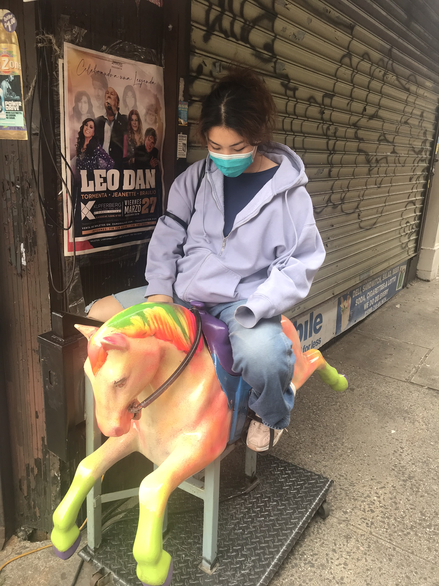
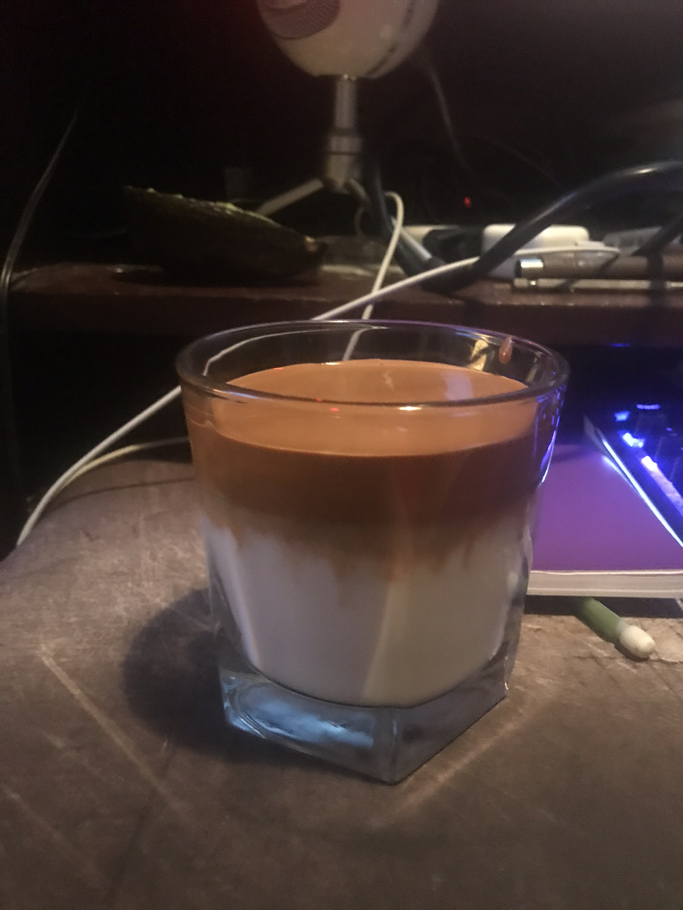
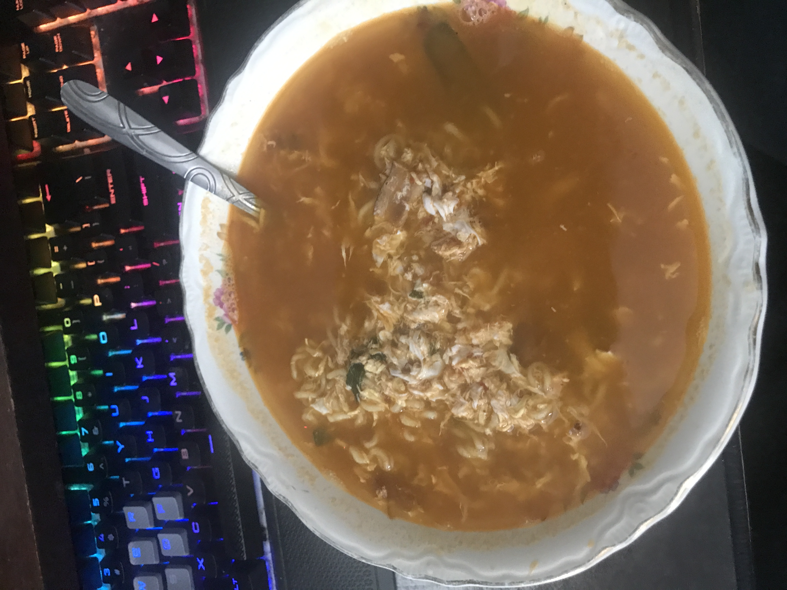
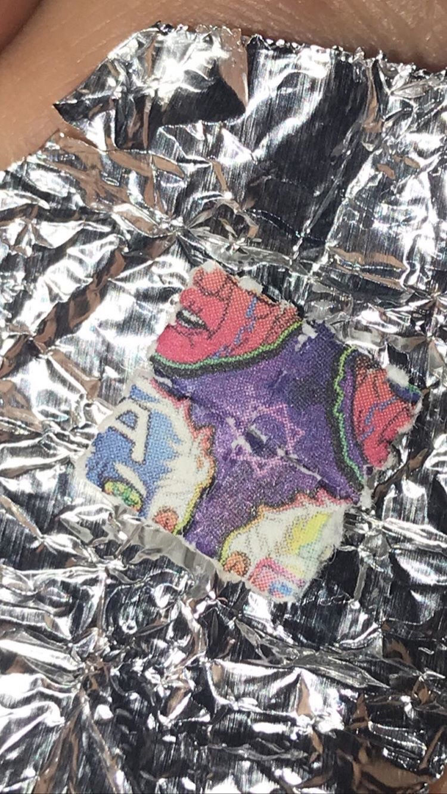

When quarintine started i didnt want to think too much about it since i didnt want to make myself super paranoid so i just kept doing what i normally do just with a mask on

However eventually lockdown happened and a lot of my homies stopped popping out to my neighborhood to hang out so now we just hang out on discord all day
 I thought i would lose it being home all day but im grateful that my girlfriend comes and visits me during quarantine, We still go out for walks for fresh air and talk about all the places we will go eat once this is over
However i needed to skate since i didnt want to lose my tricks by staying home all day so me and my friend found a highschool playground that was easy to get into
 i still had loads of free time though since i wasnt able to go to the city or stay out too late so when i was home i was usually eating. My girlfriend taught me how to make some trendy coffee called Dalgona Coffee which is not so fun to make but pretty tasty
my friends and i still missed hanging out together so we decided to celebrate bicycle day together. We linked up in the morning and headead towards the parking lot of the school we usually skate at however we all needed to scale the fence which proved more difficult than we originally thought